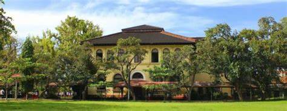
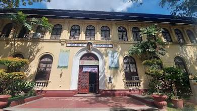
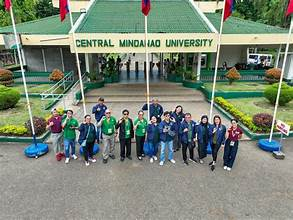
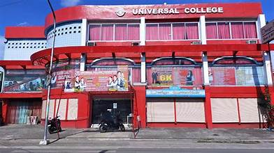
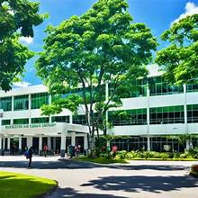
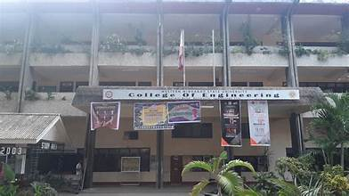

Education in Zamboanga del Sur is delivered through a network of public and private schools at all levels, from early childhood to tertiary education. The Department of Education oversees basic education, while higher education institutions provide college and vocational programs.
The province has hundreds of public elementary and high schools distributed across all municipalities and the city. These schools are managed by the Department of Education's Division of Zamboanga del Sur. Enrolment is generally high, and access to education has improved through infrastructure programs and conditional cash transfer programs.
The Western Mindanao State University (WMSU) Pagadian Campus is the premier state university in the province. It offers undergraduate and graduate programs in education, business, engineering, arts and sciences, and other fields. The university is a major source of professional graduates for the region.
Several private colleges and universities operate in Pagadian City, offering programs in nursing, teacher education, information technology, criminology, and business administration. These institutions supplement the capacity of the state university and provide options for students with specific academic interests.
TESDA (Technical Education and Skills Development Authority) accredited centers throughout the province offer skills training in areas such as automotive, welding, food processing, and other trades. These programs address the demand for skilled workers in local industries.
Educational challenges include teacher shortages in remote areas, limited facilities in some rural schools, and the need to bridge the gap between school curricula and local economic needs. Government initiatives such as the K-12 program and Pantawid Pamilyang Pilipino Program (4Ps) have helped improve school attendance and completion rates.


